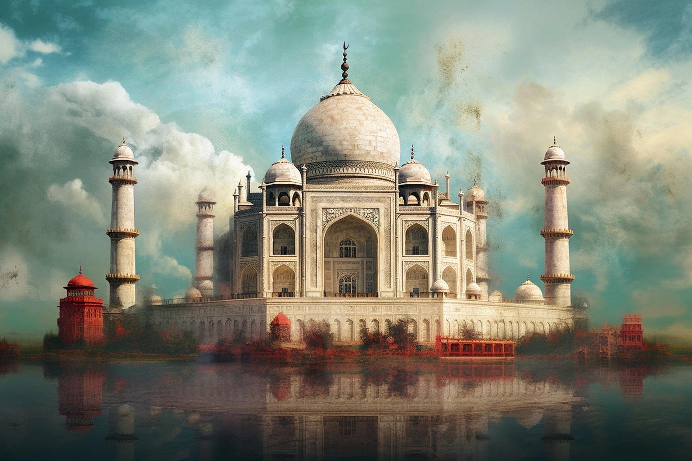

portals

gateway
of wonders

throne
of empires

hall
of rulers

age
of world wars

age
of exploration

realm
of mysteries

making of
taj Mahal
-
**"Hey everyone...!!!"** Today, we are not here just to admire the Taj Mahal... Today, we're going to uncover... **How was the world's most famous monument actually built...?** Where did all that massive marble come from...? How was it carved...? How did thousands of workers build something this enormous without modern machines...? And... after years of construction... when was the very first stone finally laid...? Want to know the truth...? As beautiful as the Taj Mahal is... The story behind its construction... is even more fascinating...!!! Because this wasn't just the construction of a monument... Here... Engineers... Master craftsmen... Expert stone carvers... Calligraphers... And thousands of workers... Worked together... To create something so extraordinary... That even today... The whole world looks at it and asks... **"How did they build this... four hundred years ago...?"** But... A story this grand... Doesn't begin with marble...!!! Like every great story... This one also begins... With a single man... Whose one decision... Changed history forever. So... Let's travel back... **To the year 1607.** The Mughal Empire was at the peak of its power. The royal markets were filled with treasures from across the world... Luxurious silk... Fragrant perfumes... Sparkling diamonds... And magnificent fabrics... So expensive... That even today's online shopping apps... Would probably offer an EMI option...!!! Among the bustling crowd... A young prince was walking through the marketplace... His name was... **Khurram.** Yes... The same prince... Who would later become... **Shah Jahan.** On that very day... He had no idea... That one seemingly ordinary meeting... Would eventually become the reason behind... The world's most famous monument. In the royal marketplace... He met... **Arjumand Banu Begum.** A few years later... In **1612**... The two were married. After their marriage... Arjumand received the title... **Mumtaz Mahal.** Many historical records suggest... That Mumtaz... Was not only Shah Jahan's beloved wife... But also... His most trusted companion. Now you're probably wondering... **"Wait... the Taj Mahal still hasn't been built!"** Exactly... That's the twist...!!! The real story of the Taj Mahal... Is only about to begin. In the next chapter... A tragic event will take place... After which... Shah Jahan will make a decision... That... Even four hundred years later... Continues to leave the entire world in awe...!!!
-
So... The story has now reached a point... Where everything seemed perfectly fine. Shah Jahan... And Mumtaz... Were together. After their marriage... The years went by... But one thing never changed... They always... Stood by each other's side. Many historical records mention... That Mumtaz... Was not simply a queen who remained inside the palace. Whenever Shah Jahan traveled... Or led a military campaign... Mumtaz often... Accompanied him. In today's words... You could call them... **"The ultimate royal couple goals..."** Traveling together... Working together... And... Facing every challenge together. Then came... **The year 1631.** At that time... Shah Jahan... Was leading a campaign in the Deccan. Mumtaz... Was with him. But... This time... Something happened... That no one had expected. **June 17, 1631.** **Burhanpur.** Mumtaz... Was giving birth to her fourteenth child. The entire royal palace... Was filled with anxiety. Everyone... Was waiting for good news. A baby girl was born... But... Mumtaz's condition... Began to worsen rapidly. Outside the chamber... There was complete silence. Inside... Every effort was being made... To save her life. But... A short while later... Mumtaz... Passed away. It is said... That in that very moment... Shah Jahan was completely devastated. So much so... That for many days... He could barely speak to anyone. And... That is where... A single question was born. **"Can a person keep the memory of the one they loved most... alive forever...?"** Shah Jahan... Did not answer that question... With words. Instead... He made a decision... That would require... Thousands of people... Thousands of skilled hands... And... Nearly twenty-two years... To complete. Yes... This was no ordinary project... It was... **"The Mega Project of the 17th Century..."** And... This... Is where... The real story... Of the Taj Mahal... Finally begins.
-
"हाय दोस्तो...!!!" आज हम सिर्फ़ ताज महल देखने नहीं आए... आज हम पता लगाएंगे... दुनिया की सबसे मशहूर इमारत... आखिर बनी कैसे थी...? इतने भारी संगमरमर आए कहाँ से...? उन्हें काटा कैसे गया...? हज़ारो मज़दूरो ने बिना मशीन के इतना बड़ा काम कैसे कर दिखाया...? और... जिस इमारत को बनाने में सालो लग गए... उसकी पहली ईंट आखिर कब रखी गई...? सच बताऊँ...? ताज महल जितना खूबसूरत है... उससे कई गुना ज़्यादा मज़ेदार है... उसके बनने के पीछे की कहानी...!!! क्योंकि यहाँ सिर्फ़ एक बिल्डिंग नहीं बन रही थी... यहाँ इंजीनियर... कारीगर... पत्थर तराशने वाले उस्ताद... ख़ुशनवीस... और हज़ारो मज़दूर... सब मिलकर... कुछ ऐसा बना रहे थे... जिसे देखकर... आज भी दुनिया बोल उठती है... **"ये चार सौ साल पहले... आखिर कैसे बना दिया...?"** लेकिन... इतनी बड़ी कहानी... सीधे संगमरमर से शुरू नहीं होती...!!! हर बड़ी कहानी की तरह... यहाँ भी पहले एंट्री होती है... उस इंसान की... जिसके एक फ़ैसले ने... इतिहास बदल दिया। चलो... अब चलते हैं... **साल 1607।** मुग़ल सल्तनत अपनी ताकत के शिखर पर थी। शाही बाज़ारो में दुनिया भर का सामान बिकता था... महँगे रेशम... ख़ुशबूदार इत्र... चमकते हीरे... और ऐसे कपड़े... जिनकी कीमत सुनकर... आज भी ऑनलाइन शॉपिंग ऐप... EMI का ऑप्शन दिखा दे...!!! इसी भीड़ में... एक नौजवान शहज़ादा घूम रहा था... नाम था... **ख़ुर्रम।** हाँ... आगे चलकर... यही... **शाहजहाँ** कहलाया। उस दिन... उन्हें बिल्कुल भी अंदाज़ा नहीं था... कि उनकी ज़िंदगी की एक छोटी सी मुलाक़ात... आने वाले सालो में... दुनिया की सबसे मशहूर इमारत बनने की वजह बन जाएगी। शाही बाज़ार में... उनकी मुलाक़ात हुई... **अर्जुमंद बानू बेगम** से। कुछ साल बाद... **1612** में... दोनों का विवाह हुआ। विवाह के बाद... अर्जुमंद को... **मुमताज़ महल** का ख़िताब मिला। इतिहास के कई विवरण बताते हैं... कि मुमताज़... सिर्फ़ शाहजहाँ की बेगम नहीं थीं... बल्कि... उनकी सबसे भरोसेमंद साथी भी थीं। अब शायद तुम सोच रहे हो... **"भाई... अभी तक तो ताज महल बना ही नहीं...!"** बस... यही तो ट्विस्ट है...!!! ताज महल की असली कहानी... अब शुरू होने वाली है। अगले फ़ेज़ में... एक ऐसी घटना होगी... जिसके बाद... शाहजहाँ एक ऐसा फ़ैसला लेंगे... जो... चार सौ साल बाद भी... पूरी दुनिया को हैरान कर रहा है...!!!
-
तो... अब कहानी वहाँ पहुँच चुकी है... जहाँ सब कुछ बिल्कुल ठीक चल रहा था। शाहजहाँ... और मुमताज़... दोनों साथ थे। शादी के बाद... साल बीतते गए... पर एक चीज़ कभी नहीं बदली... दोनों हमेशा... एक-दूसरे के साथ खड़े रहे। इतिहास में कई जगह लिखा मिलता है... कि मुमताज़... सिर्फ़ महल में बैठने वाली बेगम नहीं थीं। जब शाहजहाँ लंबे सफ़र पर जाते... या किसी मुहिम पर निकलते... तो कई बार... मुमताज़ भी उनके साथ होती थीं। मतलब... आज की भाषा में बोलें तो... **"रॉयल कपल गोल्स..."** एक साथ ट्रिप... एक साथ काम... और... एक साथ मुश्किलें भी। फिर आया... **साल 1631।** उस समय... शाहजहाँ... दक्कन की तरफ़ एक मुहिम पर थे। मुमताज़ भी... उनके साथ थीं। लेकिन... इस बार... कुछ ऐसा हुआ... जिसकी किसी ने उम्मीद नहीं की थी। 17 जून 1631... बुरहानपुर। मुमताज़... अपने चौदहवें बच्चे को जन्म दे रही थीं। पूरा शाही महल... बेचैन था। हर कोई... अच्छी खबर का इंतज़ार कर रहा था। बच्ची का जन्म हुआ... लेकिन... मुमताज़ की तबीयत... तेज़ी से बिगड़ने लगी। कमरे के बाहर... सन्नाटा था। और अंदर... ज़िंदगी बचाने की पूरी कोशिश। लेकिन... कुछ ही देर बाद... मुमताज़... इस दुनिया से चली गईं। कहा जाता है... उस पल... शाहजहाँ पूरी तरह टूट गए। इतना... कि कई दिनों तक... उन्होंने किसी से ठीक से बात भी नहीं की। और... यहीं से... एक सवाल पैदा हुआ। **"क्या कोई इंसान... अपने सबसे प्यारे इंसान की याद... हमेशा के लिए ज़िंदा रख सकता है...?"** शाहजहाँ ने... इस सवाल का जवाब... शब्दों में नहीं दिया। उन्होंने... एक ऐसा फैसला लिया... जिसे पूरा करने में... हज़ारों लोग... हज़ारों हाथ... और... लगभग बाईस साल लगने वाले थे। हाँ भाई... कोई छोटा-मोटा प्रोजेक्ट नहीं था... ये... **"मेगा प्रोजेक्ट ऑफ़ द 17th सेंचुरी..."** था। और... यहीं से... शुरू होती है... ताज महल बनने की असली कहानी।